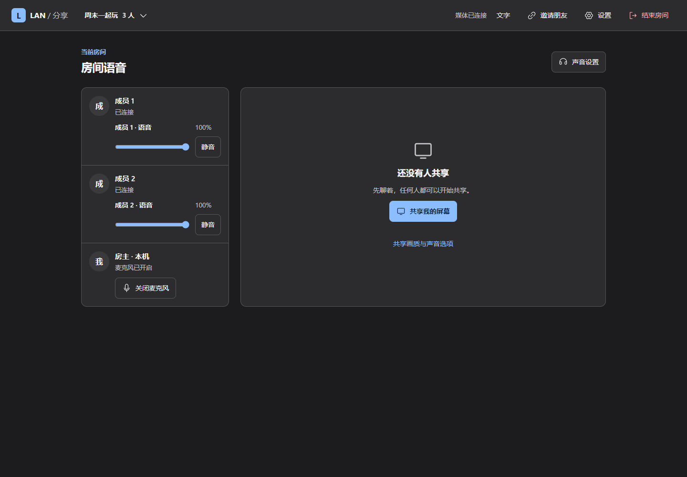
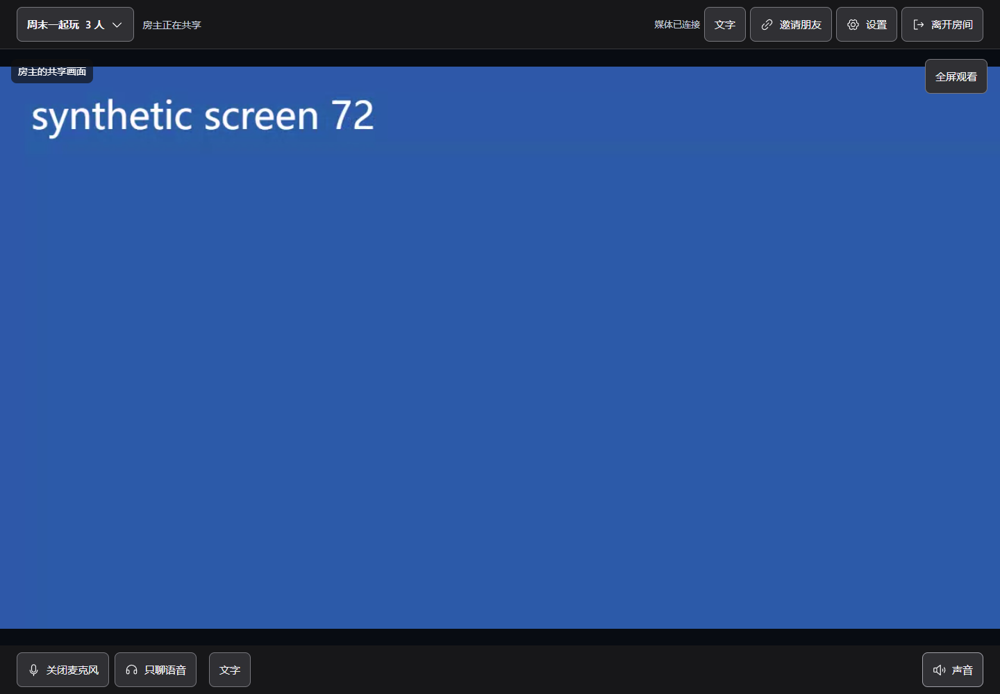
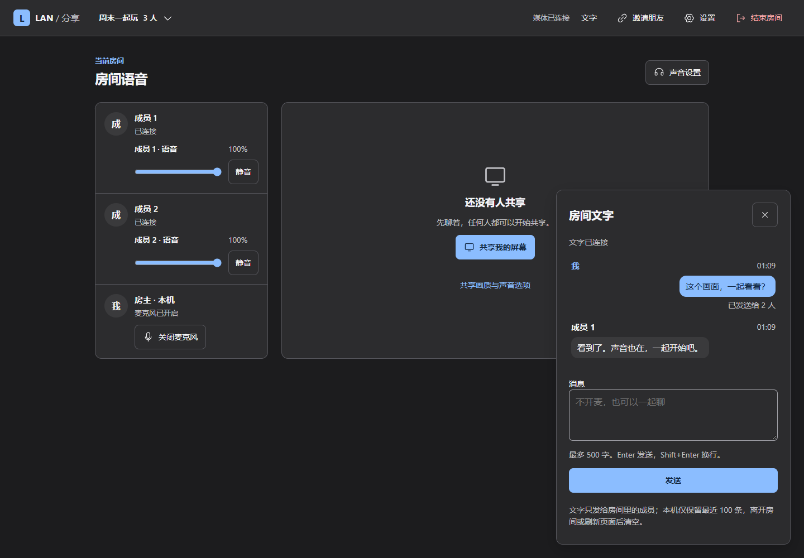

你切回游戏。
本机预览，就歇一会儿。
分享窗口失焦时暂停自己的预览播放，采集、声音和观众播放继续。回来时，立即恢复同一条画面。
LAN / 分享 0.5.0 公开测试版
画面、声音和想法，一起在场。
为同一局域网中的三个人，留一个刚刚好的空间。
Windows x64 · 桌面版 Edge / Chrome

一人分享，彼此都在场。
两位观众，共用同一份编码画面。
每一种交流，都很自然。
共享整个显示器，按需带上系统声音。
不开屏的时候，语音和文字也能让对话继续。


以上为实际程序中的测试房间；共享画面与声音采用合成媒体。
更轻盈的分享方式。
0.5.0 把两路视频编码，合为一次。
相同的编码画面分别送达两位观众，
省下重复工作，保留原有分辨率、帧率与码率目标。
编码一次，将相同的画面分别发送给两位观众。不解码、不重新压缩。
分享窗口失焦时暂停自己的预览播放，采集、声音和观众播放继续。回来时，立即恢复同一条画面。
语音模式不查询视频统计。诊断收起时降低采样频率；展开后，再及时呈现实际尺寸、帧率与编码信息。
在附近，也在一起。
共享内容无需云端中转。
画面、声音与文字，在你们的局域网中直接连接。
没有账号注册，把注意力留给彼此。
从打开，到一起。
每个人完整解压同一版本的测试包，在自己的 Windows 电脑运行 EXE，用 Edge 或 Chrome 打开页面。
一人创建房间，朋友从附近房间加入。也可以复制完整邀请信息，粘贴后加入。
选择整个显示器，按需授权系统声音与麦克风。一个人分享，其他人一起看、一起聊。
每位成员都需运行 Windows x64 版本，使用桌面版 Edge 或 Chrome。电脑须处于能够互相访问的私有 IPv4 局域网；不提供互联网中继。
需要。0.5.0 使用新的共享通路，所有成员请统一更新后重新创建房间。0.4.x 与本版的画面共享协商不兼容。
停止共享会保留房间和语音，其他成员可以接着分享。短暂断线在 30 秒保留期内尝试恢复；刷新后，麦克风和屏幕需重新点击开启。房主退出或超过保留期会结束房间。
已用原生 WebRTC 和合成媒体检查三人传输、实际 1080p 编解码帧率、停止共享、刷新恢复和 CPU 开销。实际体验仍取决于硬件、浏览器与网络。本轮按非真实游戏场景验收，未提供游戏 low 帧实测结论。
阅读完整验证范围 ↗LAN / 分享
Windows x64 · 0.5.0 公开测试版
下载 Windows 版 版本说明与其他附件完整解压后打开“先看这里.html”。每位成员都需使用同一版本。